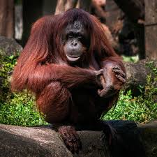
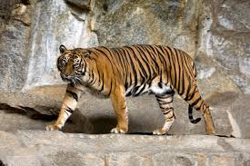
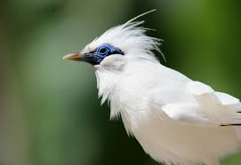
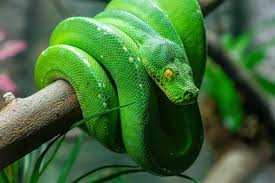
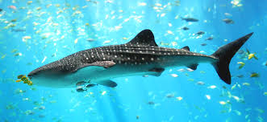
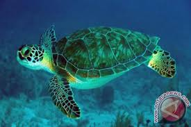
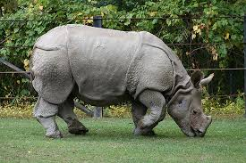
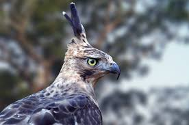
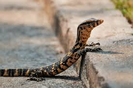
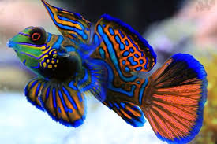

Koleksi Foto Satwa Liar
Jelajahi keanekaragaman hayati Indonesia melalui koleksi foto satwa liar kami yang menakjubkan

Orangutan Kalimantan
Spesies kera besar endemik Kalimantan

Harimau Sumatra
Subspesies harimau terkecil yang terancam punah

Cendrawasih
Burung surga asli Papua

Jalak Bali
Burung endemik Bali yang langka

Komodo
Kadal terbesar di dunia dari Pulau Komodo

Ular Pohon Hijau
Spesies ular arboreal dari hutan Indonesia

Hiu Paus
Ikan terbesar yang sering terlihat di Raja Ampat

Penyu Hijau
Spesies penyu yang bertelur di pantai Indonesia

Badak Jawa
Salah satu mamalia paling langka di dunia

Elang Jawa
Burung pemangsa endemik Pulau Jawa

Biawak Air
Reptil yang sering ditemukan di sungai Indonesia

Ikan Mandarin
Ikan kecil berwarna-warni dari perairan Indonesia
Video Konservasi
Dokumentasi kegiatan lapangan dan upaya konservasi kami